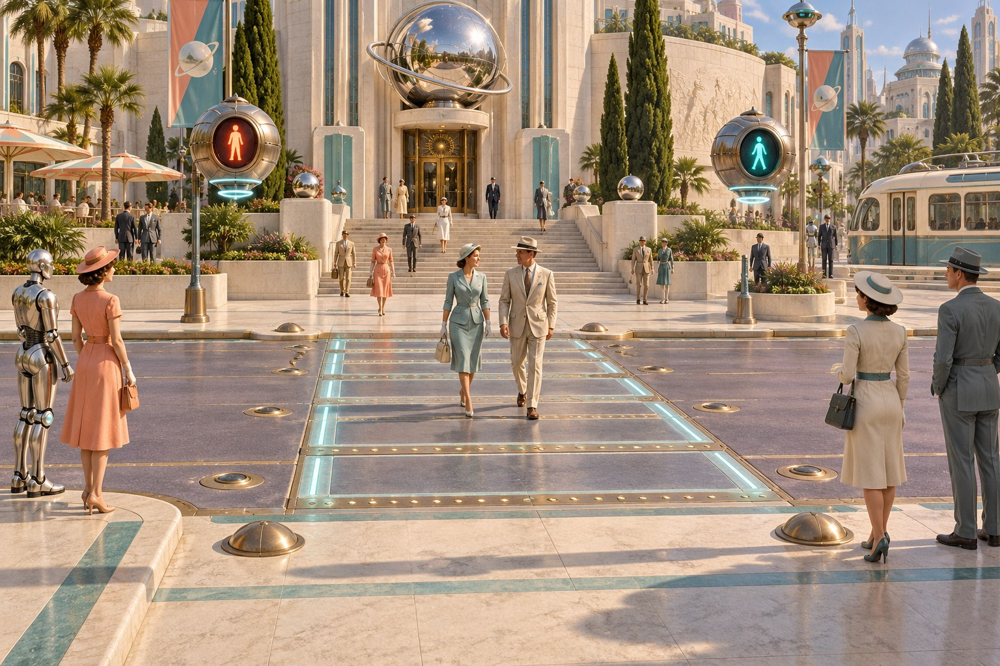
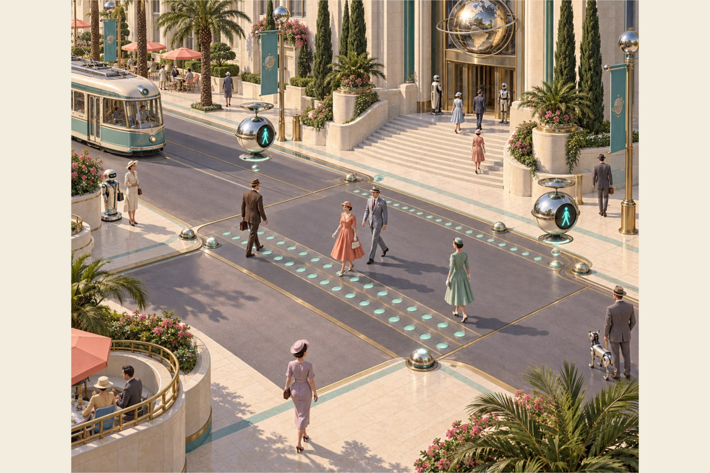

Sky: "the pedestrian lights look flat color, really ruin look of game", then "the lights should have metal ring around them, as they're embedded in the floor". Candidate only: same piece ids, placements, plan, sim and collision; nothing adopted, Unity untouched.
| now | proposed | |
|---|---|---|
| Stud, L0 (always at play zoom: a module is 6% of the screen, L1 starts at 0.8%) | 12 tris (seat 6, dot 6) | 84 tris: the metal ring 48 (two bands of 12 quads; the seam, wall and grain are texture, not triangles), lens 12, spill 24 |
| Stud, L1 | 6 tris | 40 tris |
| 13 m crossing (48 studs), L0 | 624 tris | 4,368 tris |
| Whole city: 274 + 40 modules, 1,176 studs | 14.1k tris | 98.8k tris (frustum-culled: at play zoom 1 to 2 crossings show) |
| Signal eye (SignalLens) L0 / L1 | 650 / 234 tris | 822 / 234 tris (a chrome lip round each display, in the body's slot: no new draw) |
| Clock ring (HaloRing) L0 / L1 | 2 tris | 130 / 66 tris (two flush bezels, 4.5 and 3.5 cm, flat, one band each) |
| Material slots per module, so draws | 2 | 2: lens and spill are one slot; no new draw |
| Material slots per clock ring | 1 | 2 (+1 draw on each of 35 rings, only those on screen) |
| New materials | DK_Cross_Housing (kit, URP Lit, sun specular off, one 256 x 64 map cross_bezel_v1.png, shared by studs and rings); DK_Signal_RimLens (Materials/Glow, Signal Dots). Signal Dots and Cross Glow change; no new shader file | |
| Real-time lights | 0 | 0 |
| Blended overdraw, 13 m crossing at play zoom (arithmetic, 916 px per m2 of road at ortho 14, pitch 38) | about 2.6k px (2 haloes, 2 beams) | about 20k px, 1.0% of a 1080p frame, one layer of a very cheap fragment (no texture, no lighting): spills 12.9k, pools 6.3k, beams 1.3k |



